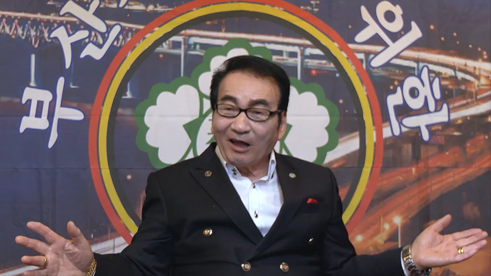

MON RÔLE
- Responsable de la recherche documentaire, de l'écriture, des archives & du sourcing
- Organisation des tournages & des interviews
- Liaison entre l'équipe coréenne et française avec les personnes interviewées
- Rédaction éditoriale
- Traduction des sous-titres du coréen vers le français
- Concept & design de l'affiche
•
Site du documentaire
•
En tournage


